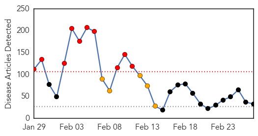
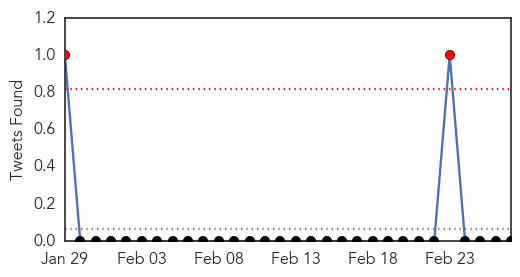
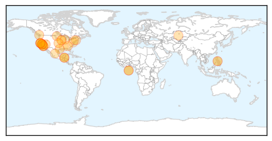
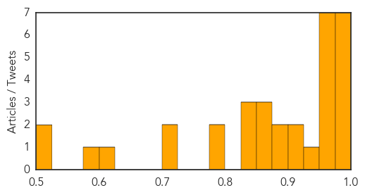

Toggle navigation
Early Warning
Daily Alerts
Measles
Feb 27, 2015
Compare to:
-
Dengue Fever
Hemmorhagic Fever
Mold/Fungal Infection
Influenza
Meningitis
Pertussis / Whooping Cough
Middle East Respiratory Syndrome
Cholera
Hepatitis
Chikungunya
Yellow Fever
Bubonic Plague
West Nile Virus
Swine Flu
Ebola
Unknown
Mumps
30 Day Trends
Web: 10
alerts
, 5
warnings
Twitter: 2
alerts
, 0
warnings
Top Articles:
0.995
Belize Issues Measles Advisory - Free Vaccine Available
0.990
Measles outbreak in US sparks local advisory
0.986
Colleges concerned about measles virus
0.985
Doctor recalls death toll of measles before immunization
0.979
Three infected with measles at Las Vegas seafood restaurant
0.976
Three new measles cases linked to Emeril’s staffer
0.976
Snohomish County has close call with measles-infected visitor
0.974
More measles cases in Lanaudière region of Quebec
0.973
WHO urges Europe to step up vaccinations
0.967
Get vaccinated for the sake of public health
0.965
In the clinics: Re-emergence of measles
0.964
Georgia measles scare over with no spread of the disease
0.964
Three Infected With Measles at Las Vegas Seafood Restaurant -
0.951
Surprising Racial Disparities Found In Flu Vaccine Rates
0.938
San Mateo County resident with measles may have exposed Berkeley restaurant diners
0.911
WHO Calls for Scaled-Up Vaccination Against Measles in Europe
0.910
4 measles cases connected to Las Vegas restaurant
0.898
WHO calls for more measles vaccination campaigns in Europe
0.881
Kazakhstan Suspends Measles Vaccination Campaign After Many Students Fall Ill
0.870
Dr. Bob Sears: Mandatory Vaccination Violates Patient Rights, Not the Answer to Measles
0.868
Up to 1,500 BART riders possibly exposed to measles by infected passenger
0.853
GOP Chair of House Science and Tech Subcommittee: I Didn't Vaccinate My Kids
0.846
Lake County Residents Could Have Been Exposed to Measles
0.841
Dana Hills High School
0.838
Person with measles dined at Berkeley restaurant, health officials warn
0.795
Vaccination exemptions on the rise in Woodbury County
0.785
Up to 1,500 BART Riders Possibly Exposed to Measles By Infected San Mateo County Resident: Officials
0.723
Measles Outbreak in United States, Not in Iowa Yet
0.703
Vaccination rates high in Woodbury County; exemptions rise
0.624
MDs' recommendations on HPV vaccine carry weight with college students
0.595
GUEST COLUMN: The vaccination debate is far from over
0.502
CRS Report of the Week: ‘The Measles: Background and Federal Role in Vaccine Policy’
0.500
Another measles patient rode BART train from Millbrae, 1,500 riders potentially exposed
Top Tweets:
No tweets found for Feb 27, 2015
Web/News Articles

Tweets

Article Locations

Article Confidences
